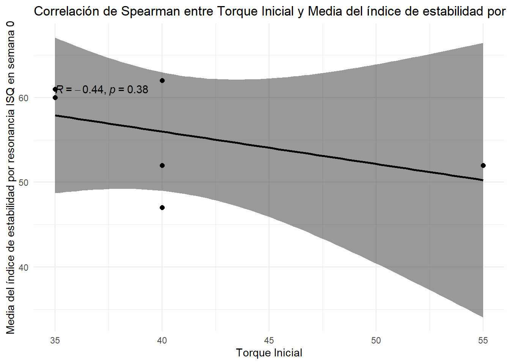

data <-read_excel("data/Resultados TESIS.xlsx", sheet ="Hoja 1")data_long <- data %>%pivot_longer(cols =starts_with("Semana"),names_to ="Semana",values_to ="Valor",names_prefix ="Semana " )data_wide <- data_long %>%pivot_wider(names_from =`Cara del implante`, # Columna que contiene los nombres para las nuevas columnasvalues_from = Valor # Columna que contiene los valores para llenar las nuevas columnas ) %>%mutate(Promedio =rowMeans(across(c(Mesial, Distal, Vestibular, Palatino)), na.rm =TRUE))tabla1 <- data_wide %>%group_by(Semana) %>%summarise(across(c(Mesial, Distal, Vestibular, Palatino, Promedio),list(n =~n(),media =~mean(.x, na.rm =TRUE),sd =~sd(.x, na.rm =TRUE),ci_inf =~mean(.x, na.rm =TRUE) -qt(0.975, df =n()-1) *sd(.x, na.rm =TRUE) /sqrt(n()),ci_sup =~mean(.x, na.rm =TRUE) +qt(0.975, df =n()-1) *sd(.x, na.rm =TRUE) /sqrt(n()),mediana =~median(.x, na.rm =TRUE),minimo =~min(.x, na.rm =TRUE),maximo =~max(.x, na.rm =TRUE) ), .names ="{.col}_{.fn}")) %>%pivot_longer(cols =-Semana, # Excluimos la columna Semana para mantenerla como identificadornames_to ="variable", # Esta columna temporal contendrá combinaciones de medición y estadísticavalues_to ="valor"# Los valores de las estadísticas ) %>%separate(variable, into =c("Medicion", "Estadistica"), sep ="_", remove =FALSE) %>%pivot_wider(names_from = Estadistica, # Las estadísticas se convierten en las columnasvalues_from = valor # Los valores para cada estadística ) %>%select(-variable) %>%group_by(Semana, Medicion) %>%summarise(across(everything(), ~ .[!is.na(.)][1]), .groups ="drop")tabla1 <- data_wide %>%pivot_longer(cols =c(Mesial, Distal, Vestibular, Palatino, Promedio), names_to ="Medicion", values_to ="valor") %>%group_by(Semana, Medicion) %>%summarise(n =sum(!is.na(valor)),media =mean(valor, na.rm =TRUE),sd =sd(valor, na.rm =TRUE),ci_inf =mean(valor, na.rm =TRUE) -qt(0.975, df =sum(!is.na(valor))-1) *sd(valor, na.rm =TRUE) /sqrt(sum(!is.na(valor))),ci_sup =mean(valor, na.rm =TRUE) +qt(0.975, df =sum(!is.na(valor))-1) *sd(valor, na.rm =TRUE) /sqrt(sum(!is.na(valor))),mediana =median(valor, na.rm =TRUE),minimo =min(valor, na.rm =TRUE),maximo =max(valor, na.rm =TRUE),.groups ="drop" )tabla2 <- data_wide %>%pivot_longer(cols =c(Mesial, Distal, Vestibular, Palatino, Promedio), names_to ="Medicion", values_to ="valor") %>%group_by(Semana, Medicion, `tipo reborde`) %>%summarise(n =sum(!is.na(valor)),media =mean(valor, na.rm =TRUE),sd =sd(valor, na.rm =TRUE),ci_inf =mean(valor, na.rm =TRUE) -qt(0.975, df =sum(!is.na(valor))-1) *sd(valor, na.rm =TRUE) /sqrt(sum(!is.na(valor))),ci_sup =mean(valor, na.rm =TRUE) +qt(0.975, df =sum(!is.na(valor))-1) *sd(valor, na.rm =TRUE) /sqrt(sum(!is.na(valor))),mediana =median(valor, na.rm =TRUE),minimo =min(valor, na.rm =TRUE),maximo =max(valor, na.rm =TRUE),.groups ="drop" )# Ajusta el orden de los factores de la columna Medicion para que Promedio sea el últimotabla1$Medicion <-factor(tabla1$Medicion, levels =c(unique(tabla1$Medicion[tabla1$Medicion !="Promedio"]), "Promedio"))tabla2$Medicion <-factor(tabla2$Medicion, levels =c(unique(tabla2$Medicion[tabla2$Medicion !="Promedio"]), "Promedio"))tabla1$Semana <-as.numeric(tabla1$Semana)tabla2$Semana <-as.numeric(tabla2$Semana)df_long <- data %>%pivot_longer(cols =starts_with("Semana"), names_to ="Semana", values_to ="Valor")# Calcular promedio por paciente y semanadf_promedio <- df_long %>%group_by(Paciente, Semana) %>%summarise(Promedio =mean(Valor, na.rm =TRUE), .groups ="drop")# Preparar df_promedio para unirlo de nuevo, manteniendo los datos originalesdf_promedio_expanded <- data %>%select(Paciente, Sexo, `tipo reborde`, `Torque inicial`, `Directo al implante`) %>%distinct() %>%left_join(df_promedio, by ="Paciente") %>%mutate(`Cara del implante`="Promedio") %>%pivot_wider(names_from = Semana, values_from = Promedio, names_prefix ="")# Unir los promedios al dataframe original, evitando duplicadosdata_2 <-bind_rows(data, df_promedio_expanded) %>%mutate(across(everything(), ~ifelse(is.nan(.), NA, .)))data_2$`Cara del implante`<-factor(data_2$`Cara del implante`, levels =c(unique(data_2$`Cara del implante`[data_2$`Cara del implante`!="Promedio"]), "Promedio"))# Preparando el dataframe para el testdata_long_2 <- data_2 %>%pivot_longer(cols =starts_with("Semana"),names_to ="Semana",values_to ="Valor",names_prefix ="Semana ") %>%mutate(Semana =as.numeric(Semana))# Preparar un dataframe para almacenar los resultadostabla3 <-tibble()# Iterar sobre cada 'Cara del implante'for (cara inunique(data_long_2$`Cara del implante`)) {# Filtrar los datos por 'Cara del implante'df_filtrado <- data_long_2 %>%filter(`Cara del implante`== cara)# Comparar la semana 0 con cada una de las otras semanasfor (i in1:8) { # Asumiendo que tienes datos hasta la semana 8 # Comprobar si la semana existemedia_semana_0 <- df_filtrado %>%filter(Semana ==0) %>%summarise(Media =mean(Valor, na.rm =TRUE)) %>%pull(Media)media_semana_i <- df_filtrado %>%filter(Semana == i) %>%summarise(Media =mean(Valor, na.rm =TRUE)) %>%pull(Media)# Calcular la diferencia entre las mediasdiferencia_medias <- media_semana_i - media_semana_0# Realizar el test de Wilcoxon para muestras pareadastest <-wilcox.test( df_filtrado %>%filter(Semana ==0) %>%pull(Valor), df_filtrado %>%filter(Semana == i) %>%pull(Valor),paired =TRUE, exact =FALSE)# Guardar los resultadostabla3 <-bind_rows(tabla3, tibble(`Cara del implante`= cara,Comparacion =paste("Semana 0 vs", i),`Difernecia: (semana i - semana 0)`= diferencia_medias,`Valor p (Wilcoxon test)`= test$p.value))}}# Realizar el test de Wilcoxon para cada combinación de Semana y Cara del implantetabla4<- data_long_2 %>%group_by(Semana, `Cara del implante`) %>%summarise(`Tipo reborde 1 (Media)`=mean(Valor[`tipo reborde`=="I"], na.rm =TRUE),`Tipo reborde 2 (Media)`=mean(Valor[`tipo reborde`=="II"], na.rm =TRUE),`Valor p (Wilcoxon test)`=wilcox.test(Valor[`tipo reborde`=="I"], Valor[`tipo reborde`=="II"], exact =FALSE, paired =FALSE)$p.value,.groups ='drop' )# Filtrar datos para la cara vestibular en la semana 0 y para "Directo al implante"vestibular_semana_0 <- data_2 %>%filter(`Cara del implante`=="Vestibular", !is.na(`Semana 0`)) %>%pull(`Semana 0`)directo_al_implante <- data_2 %>%filter(`Cara del implante`=="Vestibular", !is.na(`Directo al implante`)) %>%pull(`Directo al implante`)# Realizar el test no paramétrico (Wilcoxon, ya que las muestras son independientes)test_result <-wilcox.test(vestibular_semana_0, directo_al_implante)# Calcular medias y intervalos de confianza para ambos gruposmedia_vestibular <-mean(vestibular_semana_0, na.rm =TRUE)media_directo_al_implante <-mean(directo_al_implante, na.rm =TRUE)# Usar t.test para calcular intervalos de confianza debido a la distribución t de Studentic_vestibular <-t.test(vestibular_semana_0)$conf.intic_directo_al_implante <-t.test(directo_al_implante)$conf.int# Preparar datos para el gráficodatos_grafico <-data.frame(Grupo =c("Nivel del pilar.", "Nivel del implante."),Media =c(media_vestibular, media_directo_al_implante),IC_inferior =c(ic_vestibular[1], ic_directo_al_implante[1]),IC_superior =c(ic_vestibular[2], ic_directo_al_implante[2]))# Filtrar para obtener solo los datos de "Promedio" en la semana 0df_promedio_semana_0 <- data_2 %>%filter(`Cara del implante`=="Promedio", !is.na(`Semana 0`))
Metodologia.
Se realizó un análisis estadístico descriptivo e inferencial, evaluando la distribución normal de las variables mediante la prueba de Shapiro-Wilk. Se representó en tablas y gráficos, la estimación puntual y por intervalos de confianza de la media, la mediana y el rango (mínimo y máximo). Para evaluar si existen diferencias estadísticas entre 2 grupos se ocupó el test no paramétrico de medias Wicoxon y su versión para muestras pareadas, en caso de no cumplir el supuesto de independencia. Por último para la asociación entre 2 variables se ocupó el test de correlación de Spearman.[Consoli S, Recupero DR, Petkovic M, editores. Data Science for Healthcare: Methodologies and Applications. 1a ed. Cham, Suiza: Springer Nature; 2019.]
Para llevar a cabo estos análisis, se ocupó la estimación por intervalos de confianza con un nivel de confianza del 95% (1-α=0,95) de una distribución t de student. Se consideraron diferencias estadísticamente significativas en los análisis, los que obtengan un nivel de significancia o error de tipo 1 admisible de α<0,05. Para el análisis de datos, se utilizaron los siguientes software: R (versión 4.2.3), RStudio (versión 2023.03.0+386) y Git (versión 2.43.0). asegurando una replicabilidad y reproducibilidad de los análisis.
Resultados.
Objetivo General:
Investigar la estabilidad mecánica de implantes dentales con superficie de nanopartículas de hidroxiapatita durante un período de 8 semanas, utilizando el análisis de frecuencia de resonancia con Ostell™.
Code
# gráfico 1ggplot(tabla1, aes(x = Semana, y = media, group = Medicion, color = Medicion)) +geom_line(size =1) +geom_ribbon(aes(ymin = ci_inf, ymax = ci_sup, fill = Medicion), alpha =0.1) +theme_minimal() +labs(title ="Estabilidad mecánica de implante por semana.",x ="Semana",y ="Media del índice de estabilidad por resonancia ISQ (IC 95%)",color ="Medición",fill ="Medición") +scale_x_continuous(breaks =unique(tabla1$Semana)) +theme(legend.title =element_blank())
Code
datatable(tabla1)
Code
datatable(tabla3)
Objetivos Específicos:
1. Determinar si hay una relación entre la calidad del hueso, medida a través de la tomografía computarizada de haz cónico (CBCT), y la estabilidad mecánica del implante.
Code
# gráfico 2ggplot(tabla2, aes(x = Semana, y = media, group = Medicion, color = Medicion)) +geom_line(size =1) +geom_ribbon(aes(ymin = ci_inf, ymax = ci_sup, fill = Medicion), alpha =0.1) +theme_minimal() +labs(title ="Estabilidad mecánica de implante por semana, según tipo de reborde.",x ="Semana",y ="Media del índice de estabilidad por resonancia ISQ (IC 95%)",color ="Medición",fill ="Medición") +scale_x_continuous(breaks =unique(tabla1$Semana)) +facet_wrap(~`tipo reborde`) +theme(legend.title =element_blank())
Code
datatable(tabla2)
Code
datatable(tabla4)
2. Comparar la estabilidad mecánica inmediatamente después de la instalación del implante, medida con Ostell™, a nivel del implante y a nivel del pilar.
Code
# Crear el gráficoggplot(datos_grafico, aes(x = Grupo, y = Media, fill = Grupo)) +geom_bar(stat ="identity", position =position_dodge(), width =0.7, alpha=0.7) +geom_errorbar(aes(ymin = IC_inferior, ymax = IC_superior), width =0.2) +labs(title ="Estabilidad mecánica: Nivel del implante vs Nivel del pilar.",y ="Media del índice de estabilidad por resonancia ISQ (IC 95%)", x ="") +scale_fill_manual(values =c("blue","lightblue"))+annotate("text", x =1.5, y =max(datos_grafico$IC_superior, na.rm =TRUE) +1, label =paste("Valor p:", round(test_result$p.value, 4))) +theme_minimal() +geom_signif(comparisons =list(c("Nivel del pilar.", "Nivel del implante.")),map_signif_level =TRUE,y_position =max(datos_grafico$IC_superior, na.rm =TRUE) +2,text_format =paste("p =", formatC(test_result$p.value, format ="e", digits =2)),vjust =0) +theme(legend.position ="none")

3. Evaluar si existe una correlación entre el torque de inserción final y la estabilidad mecánica medida con el índice de estabilidad por resonancia (ISQ) en el implante y en el pilar en el momento T0.
Code
# Utilizar ggscatter para crear el gráfico de correlaciónggscatter(df_promedio_semana_0, x ="Torque inicial", y ="Semana 0", add ="reg.line", # Añadir línea de regresiónconf.int =TRUE, # Añadir intervalo de confianza para la línea de regresióncor.coef =TRUE, # Mostrar el coeficiente de correlacióncor.method ="spearman", # Usar correlación de Spearmanxlab ="Torque de inserción final.", ylab ="Media del índice de estabilidad por resonancia ISQ en semana 0") +ggtitle("Correlación de Spearman entre torque de inserción final \n y estabilidad mecánica en tiempo 0") +theme_minimal()
4. Investigar si hay una relación entre la estabilidad mecánica medida por ISQ y factores tales como la historia de enfermedad periodontal, el lugar de instalación del implante, la longitud del implante, la edad del paciente y el número de cigarrillos que fuma el paciente.